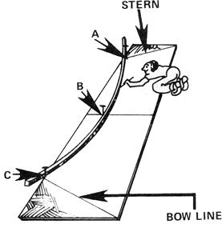

Figure 3. To loft the curved bottom line, lay out one side on a flat surface. Drive in nails at points A, B and C. Then bend a long, straight-grained, thin piece of wood around these nails and draw the bottom line as shown. Once the line is marked, cut out one side and use it as a pattern for the other.